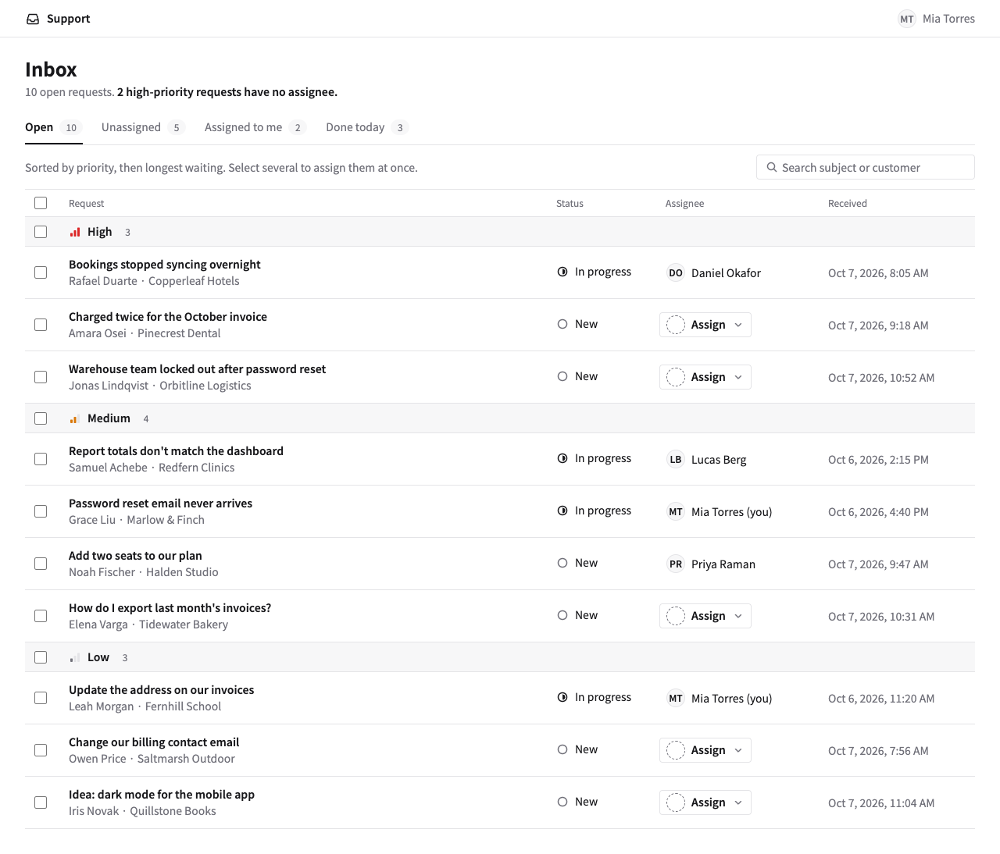

TEMPLATE REPO
Write design decisions down once, so people and AI agents build from the same place.
github.com/sadakoa/AI-design-harness
WHY
Design rules usually live in people's heads. The harness writes them down as small files, with three skills and one check, so an AI agent can follow them.
AI Design Harness
2
HOW IT FLOWS
Build
design-builder
Research, options, a proposal
Review
design-review
One area at a time
Log
work/feedback.md
Could apply to other screens
Promote
promote-feedback
An owner picks the new rules
design-system/
One question, one file
proposal
findings
weekly, run by an owner
approved changes
reads what it needs
AI Design Harness
3
WHAT YOU GET

One of three mockups in examples/support-inbox
It's an HTML page you open in a browser. It doesn't write production code — it gets you to a reviewed design.
AI Design Harness
4
IDEA 1
INDEX.md — the map: which file answers what, and what to read for each task
What is this value?
tokens/tokens.json
Which component should I use?
components/GUIDE.md
Which CSS variables can I use?
tokens/tokens.css (generated)
How does this component behave?
components/<name>.md
What do we choose, and why?
foundations/principles.md
How do components make a screen?
patterns/GUIDE.md
What must we never do?
foundations/rules.md
What do approved screens look like?
screens/
How do we write UI text?
foundations/writing.md
Why did we decide this?
decisions.md
AI Design Harness
5
IDEA 2
AI Design Harness
6
IDEA 3
Promote a finding when it came up on two or more screens, or the same rule was broken twice — and one file clearly owns it.
open
a new finding
An owner decides
AI Design Harness
7
IN PRACTICE
01
Read
Save the PRD in a new feature folder
02
Frame
Whose task gets better, and how
03
Ask you
Only what changes the design (max 5)
04
Research
Approved screens first, then others
05
Explore
About three working options
06
Recommend
Pick one, tie it to a principle
07
Write up
Everything on one HTML page
08
Review
Run design-review, then hand over
AI Design Harness
8
IN PRACTICE
Owners are the people listed in CODEOWNERS. They approve every change to the design system.
AI Design Harness
9
START
1
Use the repo as a template, or copy it into your product repo
2
Fill in the minimum: who it's for, your quality bar, your colors
3
Write a short PRD for one screen
4
Run /design-builder with it and answer its questions
5
Open proposal.html in a browser
Built on ideas from Canary's NestUI and Reiwa Travel's design-builder write-up
10
APPENDIX
● always · ○ when it's relevant · blank means skip · taken from INDEX.md
| File | Build | Components | Layout | Copy | Promote |
|---|---|---|---|---|---|
| INDEX.md | ● | ● | ● | ● | ● |
| tokens/tokens.css | ● | ● | ○ | ||
| tokens/tokens.json | ○ | ||||
| foundations/principles.md | ● | ● | ● | ○ | ● |
| foundations/rules.md | ● | ● | ● | ● | ● |
| foundations/writing.md | ● | ● | ○ | ||
| components/GUIDE.md | ○ | ● | ○ | ||
| components/<name>.md | ○ | ○ | ○ | ||
| patterns/GUIDE.md | ● | ● | ○ | ||
| screens/README.md | ● | ○ | |||
| decisions.md | ● |
AI Design Harness
11
APPENDIX
npm run check runs on your machine and on every pull request.
AI Design Harness
12